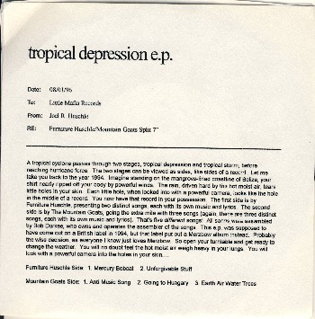
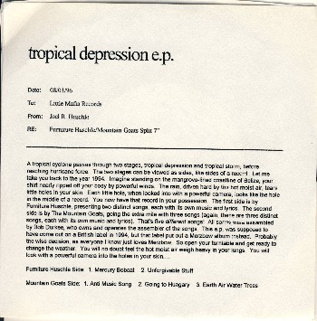

tropical depression
 

title: tropical depression
format: 7"
quote: A tropical cyclone passes through two stages, tropical depression and tropical storm, before reaching hurricane force. The two stages cn be viewed as sides, like sides of a record. Let me take you back to the year 1994. Imagine standing on the mangrove-lined coastline of Belize, your shirt nearly ripped off your body by the powerful winds. The rain, driven hard by the hot moist air, tears little holes in your skin. Each little hole, when looked into with a powerful camera, looks like the hole in the middle of a record. You now have that record in your possession The first side is by Furniture Huschle, presenting two distinct songs, each with its own music and lyrics. The second side is by The Mountain Goats, going the extra mile with three songs (again, these are tthree distinct songs, each with its own music and lyrics). That's five different songs! All songs were assembled by Bob Durkee, who owns and operates the assembler of the songs. This e.p. was supposed to have come out on a British label in 1994, but that label put out a Merzbow album instead. Probably the wise decision, as everyone I know just loves Merzbow. So open your turntable and get ready to look with a powerful camera into the holes in your skin...
furniture huschle side:
mercury bobcat
unforgivable stuff
side 2:
anti-music song
going to hungary
earth air water trees
please mail any questions/comments/complaints, or just notes hello to:nall@themountaingoats.net